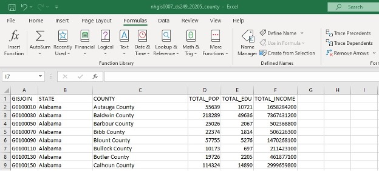

Lab 2: GWR Analysis with Choropleth Maps

Description
The roots of the word choropleth come from the Greek “choro” — meaning space or place, and “pleth” — meaning multitude, as in a plethora. Therefore, choropleth maps literally display places full of data. This is commonly accomplished by classifying geographic enumeration units and symbolizing those classes with filled regions of progressive of color. As a cartographer, you have control over the analysis, classification, and color choices, but the shape and size of the regions are fixed by geography. Here in lies the inherent problem with choropleth maps. Human perception tends to assign more value to larger size. Unfortunately, data are rarely found with the highest value in the largest space. Smaller areas will be perceived as having less value regardless of the color assigned to the polygon.
Therefore, it is imperative to NEVER map raw data values using a choropleth map. Some form of normalization must be performed in order to account for the bias described by the modifiable areal unit problem (MAUP — look it up). The most common normalization is division by total area of each unit, producing a density measurement. An example would be persons per km². Another common normalization is a proportion that gives the percent of a phenomenon in an area. An example would be percent of college graduates out of total county population. However, this measurement still suffers from the bias of randomly defined enumeration units — but it is better than mapping the raw data.
To start this lab, as should be done with any mapping project, first ask, What is the purpose of the maps I am about to make? Of course, the connected question is whom are we making the maps for. So, let’s define a general audience concerned with higher education (people just like you!). In order to make a map that is interesting, always try to answer a spatial question that is not obvious in the data alone. If all you want to show the audience is numbers, give them a table.
Our purpose here then is to use Census Data from the American Community Survey to explore the claim that education drives the economic health of a region. This is most often tied to the concept of “human capital,” where people with new ideas and skills drive economic growth. One measure of “human capital” is the percentage of educated persons in a city or region. The more educated the populace, the more robust the economy should be. When mapped, we should see regions with a higher percentage of educated people also having a higher average personal income. However, the economists Jacobs and then Lucas argue that it’s not the percentage of educated that matters, but the density of educated people. After all, smart people have to interact in order to produce “human capital.” The main hypotheses states that cities with a high education density will have stronger economies.2
Because analyzing all the cities in the US is beyond the scope of a mapping project at this scale, we will apply the concepts above to the county level aggregate. Play with the interactive map below to get a feel for educational attainment. You will make maps looking at both density and percentage of educated workers in US counties, as well as income density and average income. Finally, we will use Geographically Weighted Regression to test whether education percentage, or density, is a greater driver of income.
Lab Videos
Note: Both NHGIS’ website and ArcPro have changed since these videos were recorded. Most notably, we will be using updated data from the 2020 Census, whereas in the video data was from 2010. For the most accurate instructions, refer to this document. The video is a good guide but there are slight differences. When in doubt, read through the instructions here and feel free to reach out and email Patrick (TA) with any questions/discrepancies.
Requirements
Part 1: Developing the Choropleth
Go to the National Historical Geographical Information System (NHGIS) data website. Click on the Login link in the upper right and follow the instructions to create an account. Back on the homepage, click on the Get Data link beside Start Here. Set the Filters as follows by choosing the selection, and then clicking Submit:
Geographic Levels: county
Datasets: 2020 American Community Survey (2016_2020_ACS5a)Under the source tables tab, select the (B01003)Total Population, (B15002)Sex by Educational Attainment for the Population 25 Years and Over, and (B19313)Aggregate Income in the Past 12 Months. Under the GIS files tab, select the 2020 County file with the basis of 2020 Tiger/Line +. Under the Data Cart window in the upper right, click continue. You may see a red prompt that says “One or more tables lack a geographic level selection (see below).” Click on Select Geographic Levels and choose county. Make sure that you have three tables and one GIS file to be downloaded, and then click continue again under the Data Cart in the upper right. Under Table File Structure, select Comma delimited (best for GIS). Check the box to Include additional descriptive header row (best for spreadsheets) and click submit. After a bit, refresh the browser to see if the data is ready. Alternatively, check your email for a data link. Download the combined data table and the GIS County borders layers.
Unzip the files into a “Raw_Data” folder that you create. Make sure to stay organized by putting the contents of each zip into a named folder (IMPORTANT!!!). You may notice that the shapefile is double zipped and needs to be extracted more than once.
Start a new ArcPro project, copy the Raw_Data folder into the project folder, and then explore the GIS layer just downloaded to determine the projection. What projection is the data in? What will be the projection for the project? (You are mapping the contiguous United States, so this should sound familiar).
In the new GDB, create a Feature Dataset in the appropriate spatial reference for the project (Hint: go with the projection of the original data, which you can import). Load the county borders for the US.
Now we are going to clean up the data table. Open the
.csvtable in Excel. The matching.txtfile has all the attribute name definitions and is important to study. In the.csvyou can delete all the columns that don’t have any data. Use the information in row two to find and delete all the columns related to education attainment of an associate degree or lower for either sex. Delete all the Margins of Error columns. Delete columns AMRYE001, AMRYE002, and AMRYE019. Rename the Estimates: Total (AMPVE001) column to TOTAL_POP in row one. Rename the Estimates: Aggregate income in the past 12 months… (AMTME001) column to TOTAL_INCOME in row one. Keep the GIS Join, State, and County columns, but delete the others that are not related to a bachelor’s or higher education attainment, and that you have not renamed.Create a new column to the left of TOTAL_INCOME and name it TOTAL_EDU. Select all the higher education numbers for both sexes in row three, and then use the AutoSum button on the Formulas tab to sum them into the TOTAL_EDU column. Double-click on the small square on the lower right corner of the formula box in the TOTAL_EDU column to get a sum of all the counties’ education attainment. Copy the TOTAL_EDU column, and then use Paste Special to replace only the values, removing the formulas. You can then delete all the degree columns. Delete the second row with the extra information — you want only one header row with the names for the attribute columns. The final table should look like this (ensure that your numbers match!):

Your Excel spreadsheet should look like this. Perform a Save As, and name it
Edu_Income.csv. ArcGIS Pro should be able to read a.xlsx, but since a.csvalways works, stick with that.Now set up the map workspace. Insert a new Map Pane and add the counties. It should automatically take on the appropriate equal area projection. Join the raw table you just created to the county layer by the obvious join field (GIS Join). Check the attribute table to make sure the join was successful. Save the project.
Next, make the join permanent and reduce the dataset to the contiguous US. Using the Select by Attributes tool in the open attribute table, make a selection that includes Alaska, Hawaii, and Puerto Rico. Switch the Selection to get only the contiguous US. Export the selected data (right-click the joined layer → Data → Export Features) into the Feature Dataset and name it
Con_US_Join. The original ACS data table is now part of theCon_US_Joinattributes. Remove the original counties layer. Then symbolize the data by TOTAL_EDU using Graduated Colors. Is this a valid choropleth map? Why or why not?Switch to the Catalog View, and from the Portal in the Contents Pane, search the Living Atlas for Colleges. The top return should be called Colleges and Universities. Right-click to add them to your map, but remove all the classes besides “Four or more years”. Symbolize with small dots.
You now need to calculate the area for each county. Open the
Con_US_Joinlayer attribute table and in the upper left → click Add Field → name it Total_Area → Data Type = double → Number Format = Numeric with 2 decimal places. Then save the change in the upper ribbon. Back in the table, right-click on the header for the new column → Calculate Geometry. Choose the Area property → choose square kilometers under Units → choose Current Map under Coordinate System → then Run.Create two new columns called Percent_Educated and Average_Income. With the Calculate Field tool, derive the values using the formulas below. Now you can create
Percent EducatedandAverage Incomemaps by inserting a new Map Pane for each one. You could have used the Normalization selection of the Graduated Colors option, but we will need the actual values later. We will also go over choosing the right classification in class next week, but remember that in order to compare these maps, the classification must be as close as possible. \[{\text{Percent Educated}} =\frac{\text{Total Educated}}{\text{Total Pop}}\]\[\text{Average Income} =\frac{\text{Total Income}}{\text{Total Pop}}\] How do they compare? Conventional wisdom says they should look very similar if equally classified and displayed with the same color scheme. Where are the concentrations of “human capital”? Do they match the concentrations of actual capital? How well do the locations of universities correlate with the concentrations? Do you think that not accounting for the differences in geographic area is hiding or highlighting trends in the data? If so, how? (You may get a null for one of these calculations. Feel free to look on the internet, find a number that makes sense and fill it in to fix your nulls being sure to save your edits)Now create Education Density and Income Density maps by adding two more fields and calculating them using the formulas below. \[{\text{Education Density}} =\frac{\text{Total Educated}}{\text{Total Area}}\]\[\text{Income Density} =\frac{\text{Total Income}}{\text{Total Area}}\] How do they compare? Are they more similar than the first set? Where are the concentrations of “human capital”? Do they match the concentrations of actual capital? What relationships do the Universities have with the concentrations? Do you think that accounting for the differences in area is hiding or highlight trends in the data? If so, how?
This is the end of the Part 1. You should have four clean quantitative choropleth maps exploring the relationships between education and income. Once finished, make sure to save them and export the .jpg files at 150 dpi for the report.
In Part 2, we will get into some more advanced spatial analysis using the data you have already formatted. Remember our research question: What is the relationship between education and income? Is income more influenced by percent educated people, or the density of educated people? From the work you have completed thus far, what would be your prediction? Write down your thoughts now before you begin Part 2. It is important to have a hypothesis formulated before you are biased by the experimental results! Take a break, find the sun, breath the air!
Part 2: GWR Analysis
To start part two, let’s review the research question. In part one you mapped both income and higher education by density and percentage. Our question is whether education explains income. As you read, some economists believe that it is the density of educated people that matters, not just the percentage. So, let’s refine the question. Starting with the dependent variable, we would like to know if average income goes up when there are more educated people in society. In other words, is the average personal income dependent on education? And if so, what is more important, the percent of educated, or the density? You are going to use a form of spatial statistics called Geographically Weighted Regression (GWR) to compare income dependency to both education percentage and density. The analysis takes into consideration spatial relationships of neighbors and tries to fit a regression equation to each enumeration unit. Read the ArcGIS Pro GWR documentation to get a feel for the tools and technique.
The GWR tool requires that your data be in a projection, not just a geographic coordinate system. This is why we set the Feature Dataset to NAD 1983 Contiguous USA Albers in Part 1. Check the coordinates of your joined county layer and make sure it has the proper projection. Also, make sure you have fields for Average Income, Percent Educated and Education Density in the attribute table. If not, create them —- But I wonder how you made the first four maps?
You are going to do many runs of analysis, so stay organized. You will first look at the relationship between Average Income and Percent Educated in the counties. Open the Geographically Weighted Regression (GWR) tool and set these parameters:
Input Features: Your Projected Counties Layer
Dependent Variable: Average Income
Model Type: Continuous (Gaussian)
Explanatory Variable: Percent Educated
Output Feature Class: Name and path to the GDB Feature Dataset (for example, GWR_AvgIncome_PerEdu)
Neighborhood Type: Number of Neighbors
Neighborhood Selection Method: Golden Search
Minimum Number of Neighbors: 30
Maximum Number of Neighbors: 100
Leave the Defaults on the other options.Click Run. When the tool finishes it will add a Feature Class that shows the Standard Residual classified by standard deviation. If you have adequately explained the dependent variable with the explanatory variable, the residual distribution should be spatially random. It may look like it, but as we know, our eyes can be fooled.
Now you will check additional results by consulting the model diagnostics. The tool creates a table that can be opened by clicking on the View Details option under the Geoprocessing menu. You can view this Report at any time by going to the Geoprocessing menu bar and clicking History on the far left. Then click the GWR run and scroll down in the pop-up until you can view the messages. Look at these Model Diagnostics values:
R2 & R2Adj: Closer to 1 is better
AICs: smaller is better
Sigma Squared: smaller is better
Sigma & Sigma MLE: smaller is better
Effective Degrees of Freedom: closer to number of features is betterWhen they say “better”, they mean compared to another GWR run that has the same dependent variable, but different explanatory variables. Both runs may still be “mis-specified”, however, one explains the dependent better. Also, take a look at the charts that were generated and placed in the Contents Pane, especially the relationship between variables.
Now open the attribute table for the new feature class and look at the column statistics for these values:
StdErrorINTRCPT (Standard Error): smaller is better
StdResid (Standard Residual): smaller is better
Cond (Condition Number): Average should be less than 30, smaller is betterAgain, these are compared to another GWR run that has the same dependent variable.
Symbolize your GRW run by the Local R2 attribute with 10 classes using the Geometric Interval method. The areas closer to one have a better model fit. Are there clusters of low R-Squared values? What could be causing them; a missing explanatory variable? We usually try to keep the number of choropleth classes between 5–7, but in this case, the values should only fall between 0 and 1. Showing the data in 0.1 steps nicely displays the dispersion or clustering. Manually adjust your classes to 0.1, 0.2, 0.3, 0.4, 0.5, 0.6, 0.7, 0.8, 0.9, and 1. (Can you use a different interval method to accomplish this?) You can then import this symbology to all your GWR maps so they are directly comparable. Make a map of Local R2 for this regression run and export it to a .jpg for the report.
To check for a truly random distribution open the Spatial Autocorrelation (Global Moran’s I) tool. Enter these parameters:
Input Feature Class: output Feature Class from the GWR tool just run (for example, GWR_AvgIncome_PerEdu). Input Field: Local R2 Generate Report: Check Conceptualization of Spatial Relationships: K Nearest Neighbors Standardization: None Number of Neighbors: 30
Click Run. When it finishes, click on the View Details option under the Geoprocessing menu, find the Report File HTML, and double-click. (This html link is also placed in the project folder.) Examine the results that open in a browser. It will tell you if the Local R2 values are truly random. If they are random, then the explanatory variable has adequately explained the dependent variable, regardless of geography. If the results are clustered, geography is significant in the variable relationship, and the explanatory variable may only be valid in regional areas. They would say this model is mis-specified. If dispersed, the variables are related, but the geography effect is localized. This model is also mis-specified. In other words, dispersed and clustered runs are saying that the relationship is more complex and varies with geography; you have missed an important variable. What could it be? You can view this report at any time by going to the Catalog History and hovering over the Spatial Autocorrelation Tool run. You can also find it in the project folder.
Now you must experiment with different explanatory variables to try and get the best model fit. Start by recreating the exact run you just did, but use Education Density as the explanatory variable. Remember that all the parameters in the tables are related. If one gets smaller, another may get larger. Consult the GWR documentation to gain a deeper understanding of the tools and how to interpret the results.
There will be no perfectly fit model, only a compromise. It is also unlikely that you will get a well-fit model using only one explanatory variable. As you get to know the data, experiment with different variable combinations that are logical. Try to create the best model that explains Average Income. Should you include the location of universities as a weighted value? To do so, you would need perform a Spatial Join to the Counties layer first, and then add them to a GRW run as a dependent variable. You need to perform a minimum of four GWR runs to map. They will include the density and percent education explanatory variables, and two others, perhaps the locations of universities or other data you can find that helps explain average income. You can also choose more than one explanatory variable for a single GWR run.
EXTRA CREDIT OPPORTUNITY
20 extra points are available if you create a model of the steps of your analysis in the ModelBuilder and show it in a methods section of your report. I’m generally opposed to extra credit, but I’ll make an exception for scientific reproducibility.
Deliverables
You are responsible for a partial lab write-up due a week after your lab session. This write-up is worth 100 points and will be graded as Excellent (100), Good (80), Fair (60), or Poor (40).
Please write a partial scientific report about your analysis of your analysis that uses choropleth maps as the main output. Remember your research question and use your results to answer it. For this assignment, write just the Introduction, Results, and Discussion sections. Write the lab up in a report following the Scientific Report Template discussed in class. Please use the template. Copy and paste your data into the template; it is easier than rebuilding it from scratch. Insert the images of your maps, one to a page, full-size, rotated with the north to the left margin for landscape format images. This partial scientific report does not require the Literature Review, Methods, Conclusion, or Reference sections. Keep the Title page and Contents from the Template, but delete the sections you do not need.
The Introduction section is for briefly describing what you intend to do. Summarize the purpose of the analysis, your methods, and give a brief overview of the rest of the report.
The Results section is for displaying the maps. Describe what they show, but do not try to interpret them. Display the original four choropleth maps from Part 1. Also, include four GWR maps including the Percent Edu and Edu Density runs, along with your worst fit model and your best from Part 2. Write about their differences and similarities throughout the Results. Remember, in this section you do not have to analyze the results or add your interpretation. Just describe what the maps show, calling out key areas of interest for your reader.
The Discussion section is where you interpret what you found in the maps. Is Average Income driven by Education Density more than Percent Educated? Can education alone even explain income variation? Is the relationship constant from one region to another? How well were you able to get the model to fit? What did you conclude about the relationship between education and income? (It’s complicated!)
This is meant to be a (partial) scientific report, and to give you some room to practice scientific writing. Please be neat, organized, and professional. Spelling and grammar count. Please try to avoid using the passive voice. Many people incorrectly assume passive voice makes scientific writing sound more authoritative. This is wrong; use of the passive voice can make your writing less clear and engaging. You are welcome to use the first-person active voice in your write-up (e.g., “I use geographically weighted regression (GWR) to …”). There is no absolute number of pages required. Just use what it takes to cover the material: your introduction, results, and discussion.
Please save your lab write-up as a Microsoft Word or PDF document. Give your lab write-up a file name in this format:[last name]_lab-2.[format]For example, my lab write-up would be Bocinsky_lab-2.docx or Bocinsky_lab-2.pdf.
Due Dates
This lab write-up is due one week your lab session. Lab write-ups are due by 2:00 PM Mountain Time.
Here is a table of due dates:
| Wednesday Section | Thursday Section | |
|---|---|---|
| Lab 2 | March 13 | March 14 |
Turn in your map tutorials using this Microsoft Form: https://forms.office.com/r/FdA7ku2pCa. You will be required to sign in using your UMConnect email address (NetID@umconnect.umt.edu). If you have trouble reaching the form, please let me know ASAP.